WWDC 2022: What's new in UIKit
Find hereafter a detailed summary of the above named video which belongs to a taxonomy of some WWDC footages.
The original video is available on the official Apple website (session 10068).
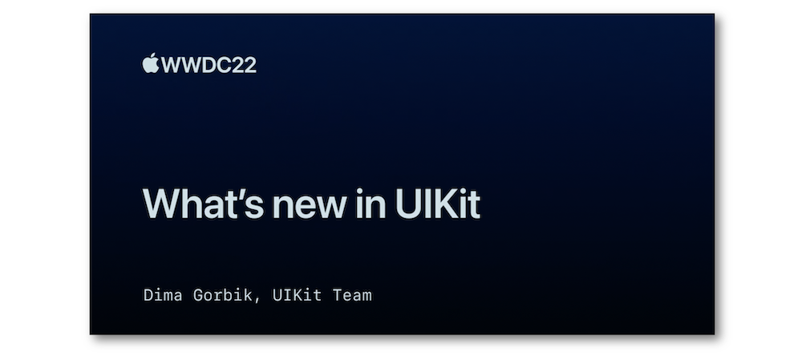
"Discover the latest updates and improvements to UIKit and learn how to build better iPadOS, iOS, and Mac Catalyst apps. We'll take you through UI refinements, productivity updates, API enhancements, and more. We'll also help you explore improvements to performance, security, and privacy."
The outlines of this speech are indicated hereunder:
Most of the illustrations are parts of the Apple presentations and may be available at the Resources section inside the Overview sheet of each video.
Hereafter, the underlined elements lead directly to the playback of the WWDC video at the appropriate moment.
Productivity improvements #
Navigation bar #
Find replace #
Easily activated by a flag for UIKit views, this iOS 16 new feature aims at handling only text between views and documents that abide by this design.
Edit menu #
The UIMenuController is now deprecated to give way to the new UIEditMenuInteraction class that displays different context menus according to their activation.
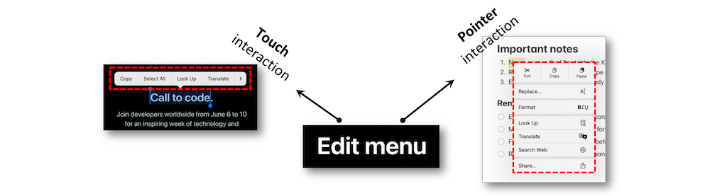
Sidebar materials #
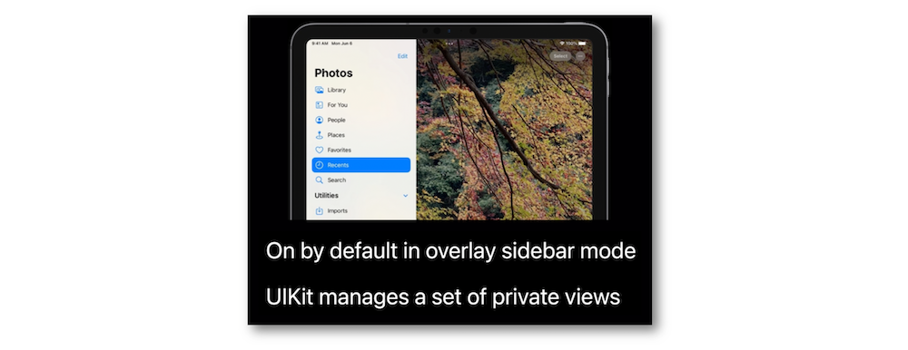
Control enhancements #
In iOS 16, the user permission must be granted thanks to an alert instead of the former information banner display.
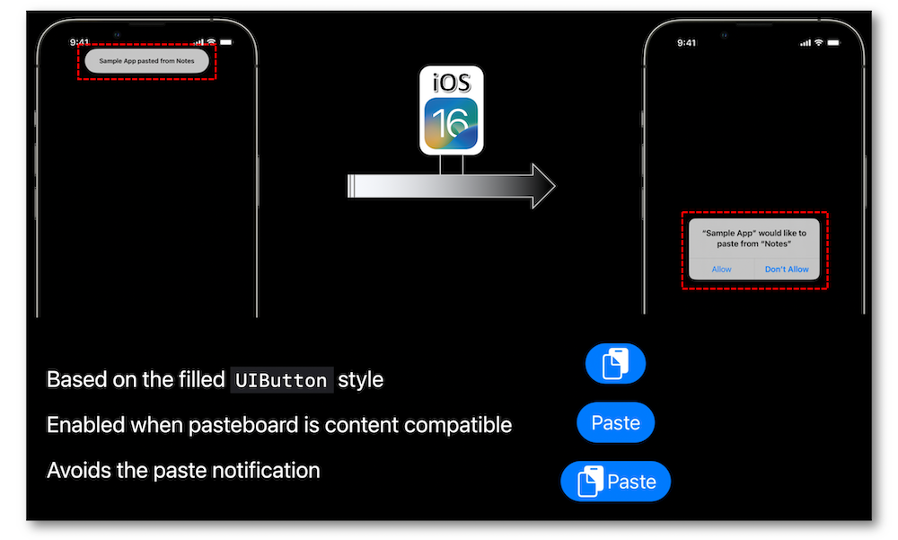
Notice that the new UIPasteControl leads to the custom paste controls replacement while providing a button look-like behavior.
The UICalendarView new component comes with various possible selections and customizations.
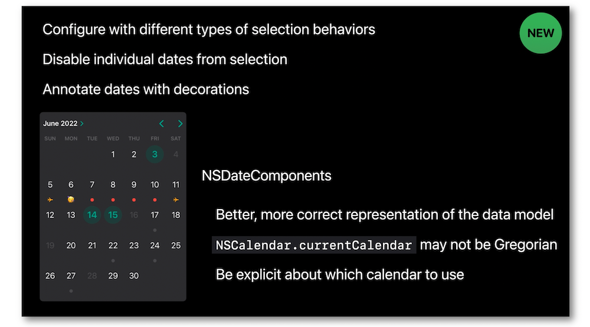
The calendar view configuration with multiple date selections takes few lines of code to be implemented.
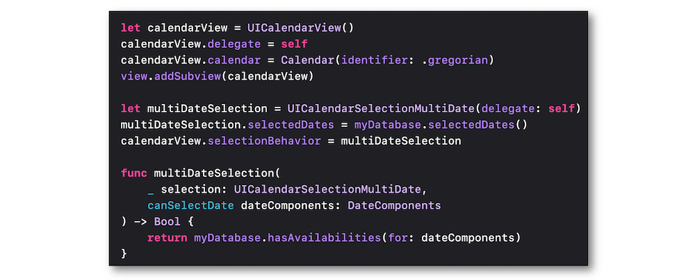
Using a calendar delegate's method is the best way to bring about an easy configuration of the decorations.
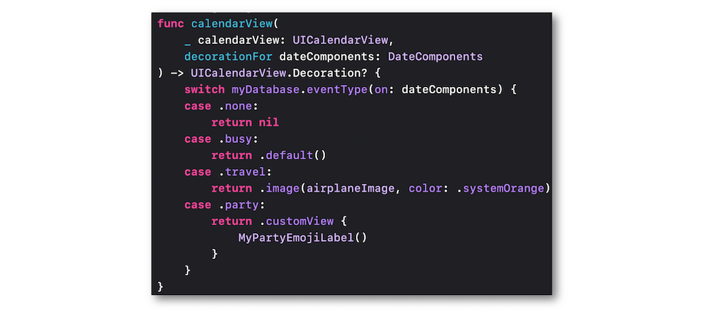
API refinements #
Sheets #
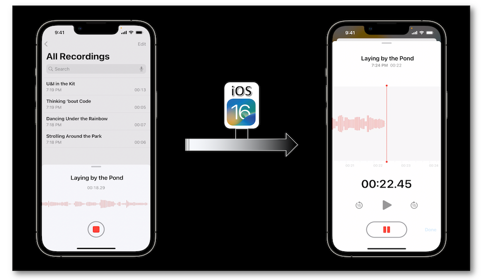
New coding elements have been introduced to enable various approaches of the resizing.
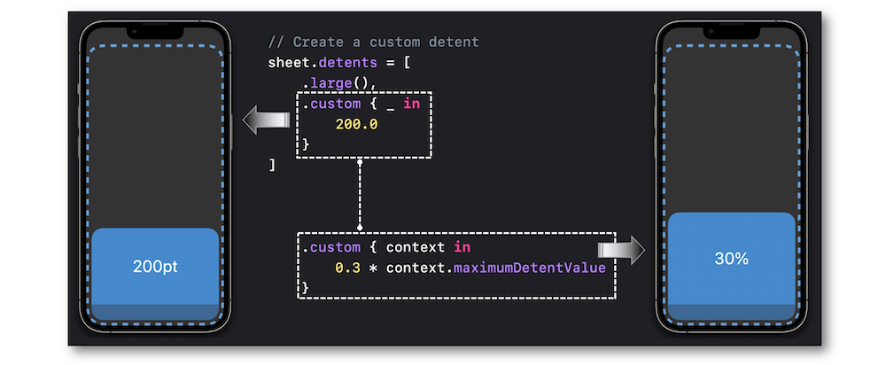
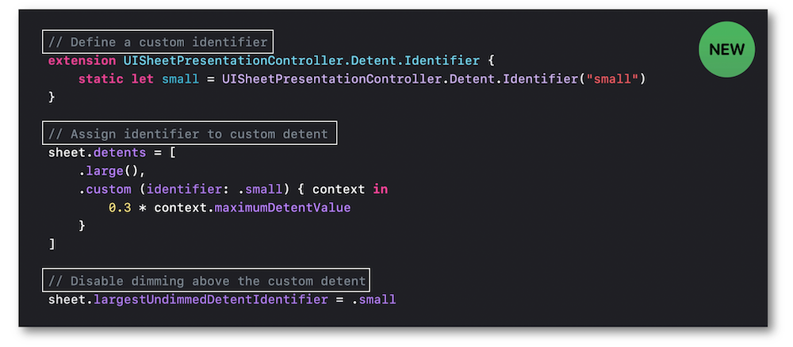
SF symbols #
In iOS 16, the monochrome rendering mode isn't necessary the default one anymore.
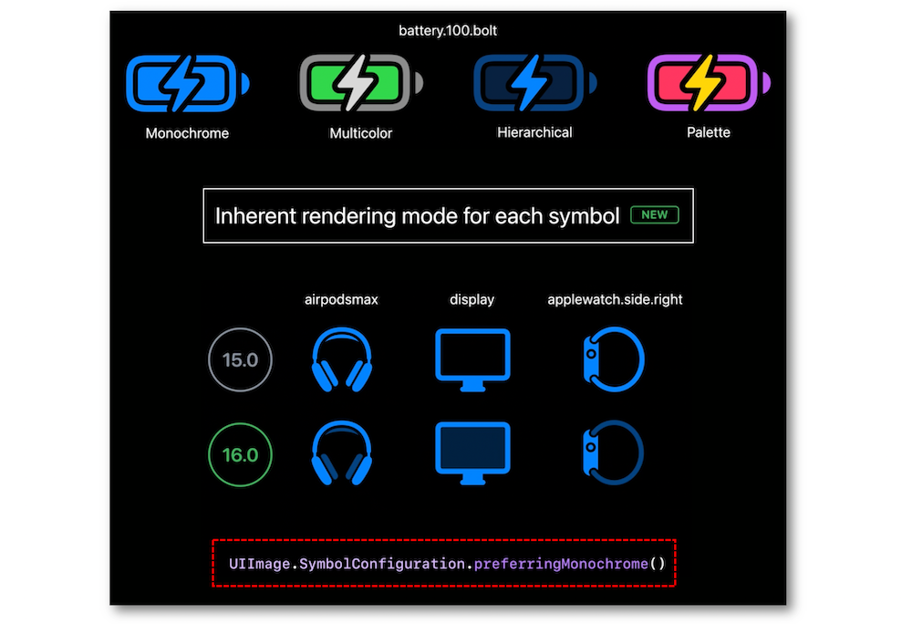
New variable symbols have been introduced to suggest different variations according to a dedicated rendering value.
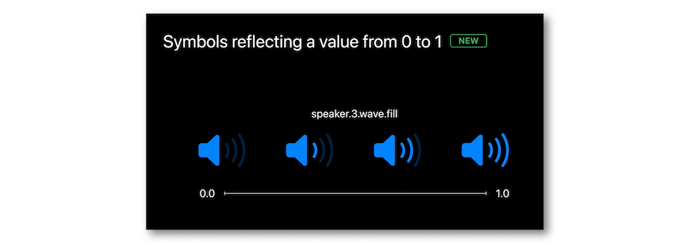
Their implementations are basic and effortless.
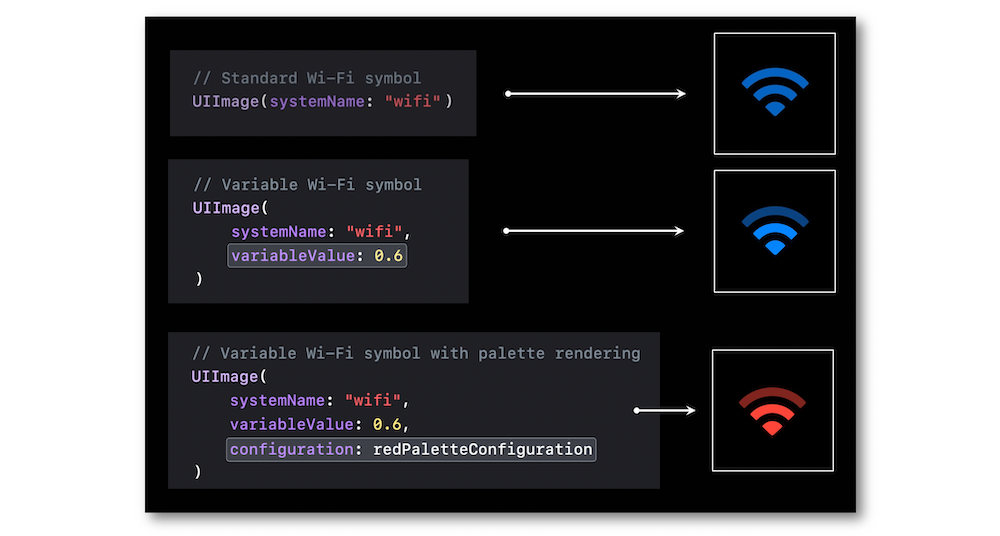
Swift Concurrency #
New features including the Sendable protocol conformance for some types get rid of former compiler warnings dealing with dispatch between the MainActor and custom actors.
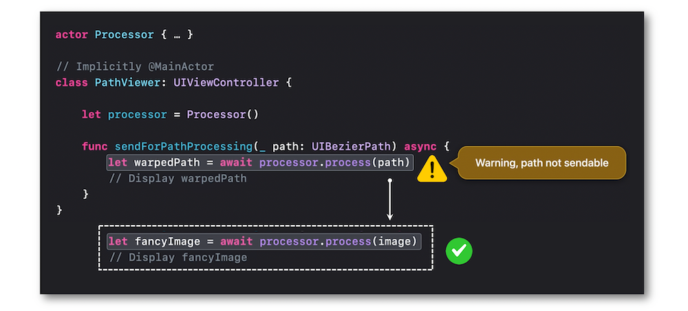
Stage Manager #
This iOS 16 new feature gives rise to the concept of having an app that doesn't belong to the main screen and thus adapting the way to pick up information about the interface.
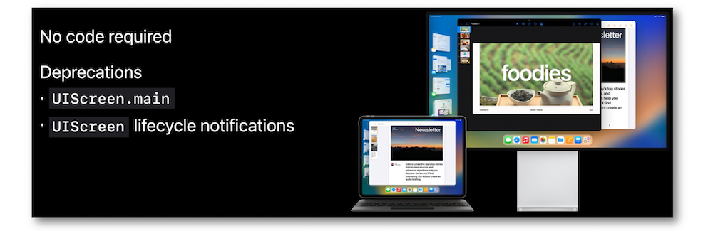
Self-sizing cells #
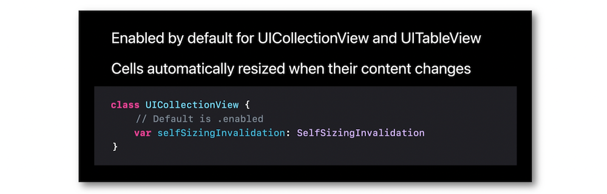
The various ways to embed this functionality are explained and detailed according to the different situations one's may come across.
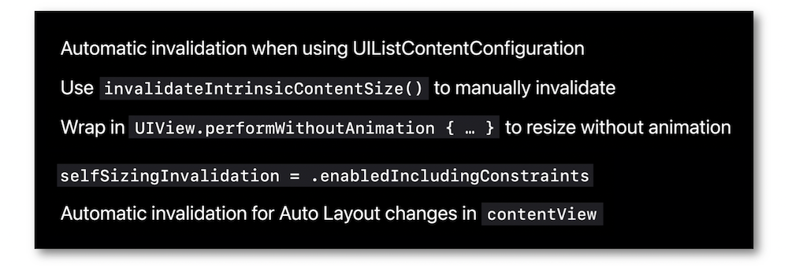
UIKit & SwiftUI #
A new content configuration type named UIHostingConfiguration empowers SwiftUI for creating collection and table view cells in the UIKit environement.
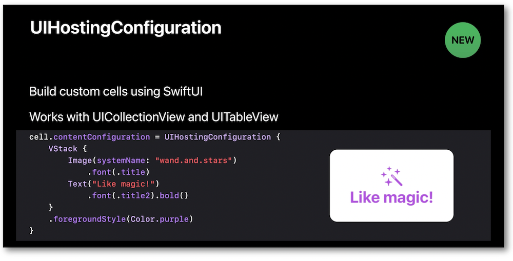